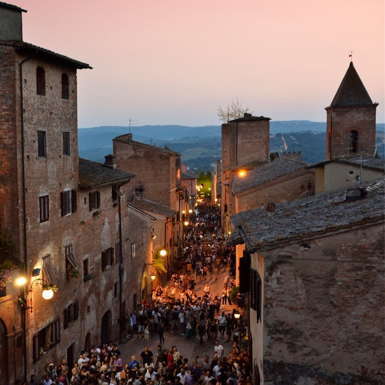

-
 -

Piazza Boccaccion di Certaldo basso
-

Emblema di Certaldo basso e alto
-
Durante il periodo Mediceo, dal XVI fino al XVIII secolo, Certaldo fu considerato un distretto di produzione agricola, e pertanto destinato ad uno sfruttamento totale. Per tutto questo periodo non si ha nessun ampliamento del borgo, se non la costruzione del bastione circolare di Palazzo Pretorio e della fortificazione di Porta al Rivellino. Molto probabilmente nel tardo Medioevo e nel periodo rinascimentale, tra XIV e XV secolo, cominciarono a svilupparsi i primi insediamenti ai piedi del borgo fortificato, alle intersezioni tra la via Francigena e le principali vie di accesso al castello. Questi insediamenti, di natura agricola ed abitativa, sono palesemente ancora visibili in via di Stradella Vecchia, all'incrocio tra la via Francigena (oggi via Roma) e Costa Vecchia (la via di accesso più antica e suggestiva per Certaldo Alta) e lungo la parte finale di Costa Alberti, all'incrocio con la Francigena in direzione nord-ovest (oggi Borgo Garibaldi). Al XIV secolo risalgono molti insediamenti agricoli, soprattutto poderi, situati intorno a Certaldo, uno tra tutti la Fattoria del Bassetto, a sud del paese. Nel XVI secolo invece venne costruito il mulino sul fiume Elsa, situato presso il ponte sullo stesso fiume. Con l'avvento dei Lorena la nuova politica, liberale e favorevole agli scambi, sposta l'attenzione dal borgo fortificato alla strada Francigena in fondovalle, dove si incomincia a sviluppare, a partire dai precedenti insediamenti di epoca tardo medioevale, un nuovo nucleo urbano, staccato e distinto dal borgo medioevale fortificato sulla sommità del colle.Nel 1757 la Propositura viene trasferita dalla Chiesa dei SS Tommaso e Prospero alla chiesa di S Andrea del Borgo (oggi sconsacrata), sull'innesto di Costa Alberti nella via Francigena, nel borgo basso. Nel 1772 il Vicariato di Certaldo fu privato delle competenze amministrative e della giurisdizione su alcune podesterie, comprendendo un territorio più circoscritto, limitato alle podesterie di Certaldo, Barberini di Val d'Elsa, Castelfiorentino, Gambassi, Montespertoli e San Casciano in Val di Pesa. Infine, nel 1787, il Vicariato di Certaldo e la relativa podesteria furono soppresse: la giurisdizione civile fu sottoposta alla podesteria di Catelfiorentino, mentre quella criminale fu incorporata nel Vicariato di San Miniato[26]. Il borgo alto perse così la sua funzione amministrativa e quindi la sua importanza strategica, politica ed amministrativa. Tutto ciò provocò una decadenza del vecchio borgo e lo sviluppo del nuovo borgo in basso, dove si formarono le prime abitazioni civili lungo la via Francigena ai piedi del castello. Nel 1849, con la costruzione della linea ferroviaria Empoli – Siena e della stazione ferroviaria di Certaldo, nascono le prime attività manifatturiere che danno una grandissima spinta allo sviluppo industriale, commerciale, demografico ed urbanistico. Il borgo basso si sviluppa ulteriormente, assumendo la sua forma attuale, con Piazza Boccaccio, dove vengono trasferiti il comune e la propositura, e diventa il fulcro centrale del nuovo borgo, che si espande tra la via Francigena e la ferrovia, con abitazioni private, attività manifatturiere e agricole e la stazione dei treni. Al plebiscito del 1860 per l'annessone della Toscana alla Sardegna i "sì" non ottennero la maggioranza degli aventi diritto (650 su totale di 1950 aventi diritto), con un astensionismo da record, sintomo dell'opposizione all'annessione.[27] Lo sviluppo urbanistico e manifatturiero continuano per tutto il XIX ed il XX secolo: il centro urbano si sviluppa sui nuovi assi di Via II Giugno e Viale Margherita, oggi Viale Matteotti, e prosegue anche durante il ventennio fascista con la costruzione dell'attuale palazzo scolastico in Piazza della Libertà. Durante la seconda guerra mondiale, Certaldo fu uno dei comuni della Toscana designati a luogo di internamento libero per ebrei stranieri e dissidenti politici. Vi soggiornarono a domicilio coatto due persone: Antonio Barboric, un sarto di Lubiana, accusato di attività sovversive, e un ebreo greco, Atanasio Liaorutzos.[28] Con il passaggio del fronte, Certaldo subisce vari bombardamenti, che portano alla perdita di edifici storici nella parte alta del paese; uno per tutti, la Casa di Giovanni Boccaccio, ricostruita nell'immediato dopoguerra. Il 21 maggio 1983 a Certaldo ebbe luogo il Rock in a hard place, il primo vero festival heavy metal italiano, voluto dalla redazione della fanzine fiorentina Metal City Rockers[29].
More info